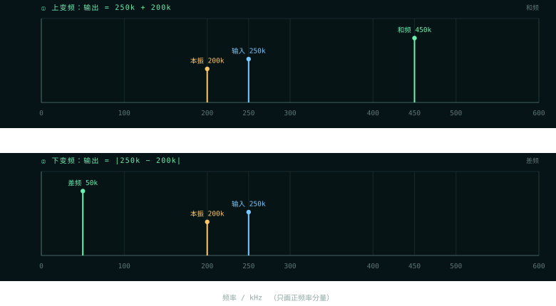
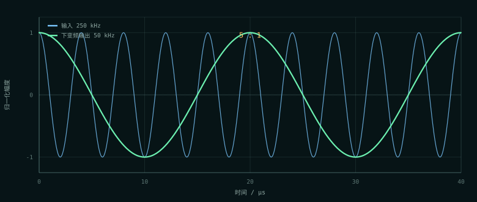

PART ONE · 通信原理
为什么需要“复数”混频
实数混频：一次乘法，两份结果
最朴素的混频就是把输入乘上本振。用三角恒等式展开：
= ½ cos[2π(fin − flo)t] + ½ cos[2π(fin + flo)t]
差频与和频同时出现，而且幅度都只有原来的一半。如果只想保留其中一个，后面必须跟一个滤波器；更麻烦的是，在接收机里，位于本振另一侧的“镜像频率”会搬到同一个中频上，和有用信号叠在一起，滤不掉。
这就是实数混频的固有代价：它分不清正频率和负频率。一个实正弦 cos(2πft) 在频谱上有 +f 和 −f 两根谱线，乘上本振后，四根谱线两两相加，必然产生两个输出。
复数混频：一次乘法，一个方向
如果把信号表示成复指数 ej2πfint，它只有一个频率分量。乘上复本振 ej2πflot：
ej2πfint · e−j2πflot = ej2π(fin−flo)t （下变频）
输出只有一个频率。方向由本振的指数符号决定：e+jφ 是上变频，e−jφ 是下变频。工程上用 CONJ 参数选择是否对本振取共轭。
复数混频不是“更高级的数学”，而是用两路实信号（I/Q）携带一个复数的全部信息。有了 I/Q，正频率和负频率就可以区分，镜像才能被抑制。
I/Q 两路到底怎么算
把复数写成 (i + jq)，本振写成 (cos + j sin)，直接做复数乘法：
qout = i·sin + q·cos
qout = q·cos − i·sin
注意下变频时两路都要翻符号：i·cos + q·sin 和 q·cos − i·sin。只翻 q 路得到的东西既不是上变频也不是下变频，而是一个相位关系错误的结果。s02 第一版就踩过这个坑，而且 Python 参考模型犯了同一个错，向量回放全绿——详见下面的「踩过的坑」。
负频率不是玄学
在实数世界里，−f 和 +f 是同一根谱线；在复数世界里，它们是两个不同的旋转方向：ej2πft 逆时针转，e−j2πft 顺时针转。I/Q 两路正好能记录“转的方向”。
所以复数混频的“只搬一个方向”，本质是保留了旋转方向的信息。一旦把 I/Q 合成一路实数，方向信息就丢了，和频与差频又会同时出现。


正交误差会变成镜像
复数混频能抑制镜像，前提是 I/Q 两路幅度相等、相位精确相差 90°。如果本振有幅度误差 ε 或相位误差 θ，镜像抑制比大约会掉到：
模拟正交解调器要靠器件匹配，温漂和老化都会让 ε/θ 变大。数字 NCO 的 sin/cos 来自同一个相位和同一张表的对称量化，90° 是生成时保证的；剩下的误差只来自位宽和表，可以算、可以测。
PART TWO · FPGA 实现
四个乘法器，一个寄存器
结构：复乘展开成四个实乘
i·sin, q·cos12 × 12
位宽：全精度 25 位，最后才截
两个 12 位有符号数相乘，全精度乘积是 24 位；两路相加再多 1 位，所以和是 IW + AW + 1 = 25 位。极限情况 (−2048) × (−2048) × 2 = 223，24 位补码最大只到 223 − 1，所以确实需要第 25 位。
| 量 | 位宽 | 怎么来的 |
|---|---|---|
| 输入 / 本振 | IW = AW = 12 | NCO 输出 12 位补码 |
| 全精度和 | IW + AW + 1 = 25 | 两路乘积相加，留 1 位进位 |
| 右移 | SHIFT = AW − 1 = 11 | 把“平方”的定点尺度除回去，恢复单位增益 |
| 输出 | OW = IW + 1 = 13 | 单位增益下 12 位够，多 1 位防舍入越界 |
定点数相乘会把尺度“平方”：本振幅度 1.0 对应 2AW−1，乘完后尺度变成 22AW−2。所以右移 AW−1 位，正好把尺度除回单位增益。移少了输出整体放大、容易削顶；移多了白白丢低位精度。
舍入与饱和：两个都不能省
右移在硬件里是“向 −∞ 取整”，会给输出带来约 −0.5 LSB 的直流偏置。ROUND=1 先加半个 LSB 再移，变成四舍五入（tie 一律向 +∞），偏置基本消掉，代价只是一个加法器。
加半个 LSB 之后，最大正值可能刚好越过上界，所以顺序必须是：先加宽 1 位 → 舍入 → 饱和到 OW。如果省略饱和、让结果回绕，最大的正数会突然变成最大的负数，波形上就是削顶处翻符号——定点设计里最经典的一类事故。
| 输入（移位前） | ROUND=1 | ROUND=0 | 说明 |
|---|---|---|---|
| 1024 | 1 | 0 | 正 tie，向上 |
| −1024 | 0 | −1 | 负 tie，向 +∞（不是远离零） |
| 1023 | 0 | 0 | 不到半个 LSB |
| 3072 | 2 | 1 | 1.5 LSB → 2 |
饱和逻辑在主配置下几乎撞不到：NCO 输出限幅在 ±2047，顶层 OW=13 离边界很远。所以 TB 里专门例化了一个 OW=8 的实例，验证 +2047 → +127、−2048 → −128，而不是靠主配置去撞。
CONJ 的写法
// 上变频：e^{+jφ} i_sum = i_cos - q_sin; q_sum = i_sin + q_cos; // 下变频：e^{-jφ}，等价于本振取共轭 if (CONJ) begin i_sum = i_cos + q_sin; q_sum = q_cos - i_sin; end
写成“两路都翻”而不是“只翻 q”，是这一节最值得记住的实现细节。共轭作用于整个复数本振 cos + j sin → cos − j sin，交叉项因此同时变号；只改一路会得到一个既不是上变频也不是下变频的怪东西。
验证：三层证据
| 层 | 手段 | 抓什么 | 结果 |
|---|---|---|---|
| ① 向量回放 | Python 任意精度整数模型生成 4 组 × 1620 用例，TB 逐拍比对 | 位宽、符号扩展、舍入、饱和 | 全对 |
| ② 性质断言 | 单位幅度本振扫 32 个相位，检查 i²+q² | “整体尺度错 2 倍”这类错 | 偏差 ≤ 8 LSB |
| ③ 边界手算 | cos=0, sin=64, i=q=64；+90° 输入 (2047,0) | CONJ 方向、tie、饱和 | 逐条对上 |
算术级 TB 45 个检查点，板级 TB 24 个。两个 TB 的判据强度不同：顶层默认参数下输出幅度只有 2047，离饱和边界很远，舍入的影响只有 ±1 LSB，所以 M1（去舍入）/M2（饱和改回绕）在顶层抓不到——这不是重复劳动，而是“算术级”和“系统级”各自该抓的东西不同。
上板：两个方向都验了
板级实验台用第二个 NCO 造复单音输入（I=cos, Q=sin，即 ejωint），第一个 NCO 做本振。这样板上立刻有东西可混，判据是频率，一眼能核。
| 项 | 实测 |
|---|---|
| 下变频输出 | i_out 周期 1000 点 → 50 kHz；输入 200 点 → 250 kHz，比例 5:1 |
| 上变频输出 | CONJ=0 后约 73 个周期/窗口 → 450 kHz |
| 资源（纯设计） | 129 LUT / 92 Reg / 6 BRAM / 4 DSP（含两个 NCO 表） |
| 含 ILA | 1464 LUT / 2416 Reg / 23 BRAM；WNS +5.697 ns |
| CSV 逐点对账 | 两组 capture 各 8,191 / 8,191 点，按上一拍输入复算 0 LSB |
截图与读图约定在 上板展示 · s02 Mixer。注意看 50 kHz 输出与 250 kHz 输入的比例，以及 450 kHz 上变频那一版的周期数。
踩过的坑：参考模型也会犯同一个错
下变频只翻了 q 一路。RTL 错了，Python 参考模型也错了同一个地方，于是向量回放全绿——自己证明自己。最后是边界手算 cos=0, sin=64, i=q=64 把真 bug 揪出来的。教训：参考模型和 RTL 不能由同一个理解盲区写出来；必须有一层人能一眼核对的边界用例。
- 提前截中间结果：省不下乘法器，只会白丢精度，还让“哪一位代表什么”变难查。先全精度，最后才截。
- 舍入/saturation 在顶层 TB 里不可见：不是测试没写，而是主配置离边界太远。要给边界单独例化一个小位宽实例。
- 4 个 DSP 正好对应 4 个 12×12 乘法器；如果综合出来是 8 个，先查是不是
CONJ被写成了两套独立乘法。
如果只记三件事
- 实数混频必然产生和频 + 差频；复数混频用 I/Q 区分正负频率，一次复乘只搬一个方向。
- 共轭是“两路都翻”——
i·cos + q·sin与q·cos − i·sin，只翻 q 是错的。 - 定点乘法把尺度平方，所以右移
AW−1恢复单位增益；先全精度、再舍入、最后饱和。